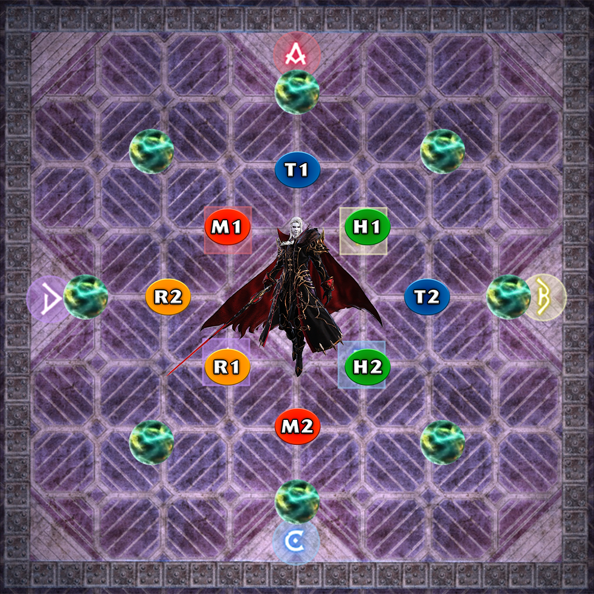
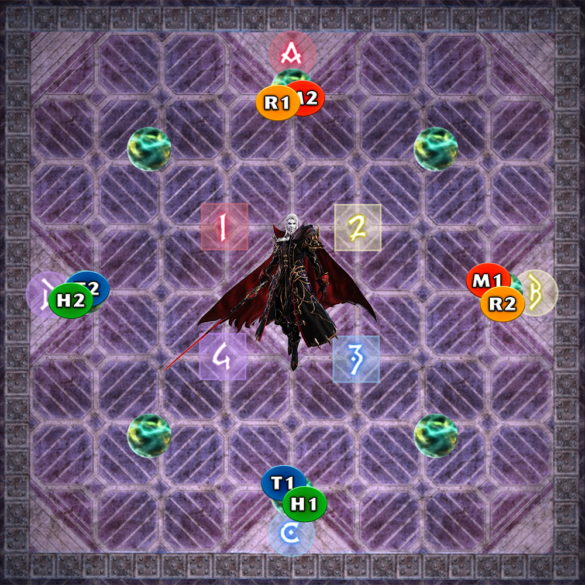
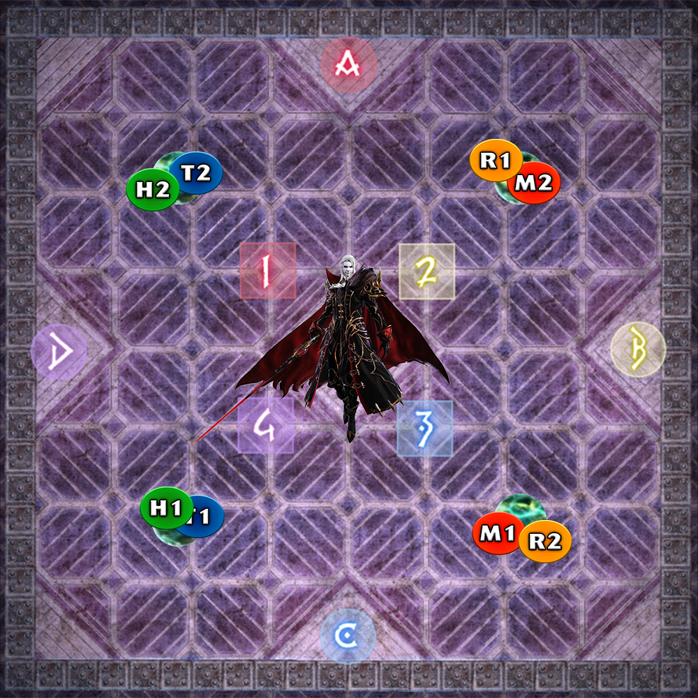

Asphodelos: The Fourth Circle (Savage) is a high-end duty added in patch 6.05. The fight can be unlocked by speaking to Nemjiji in Labyrinthos (8.4, 27.4) after completing Asphodelos: The Fourth Circle.
The minimum ilvl required to enter this fight is 580.
Hesperos will tether to either all supports or all DPS and hit them with Bloodrake. After this, he will use Aetheric Chlamys and absorb the aether of whoever was hit by Bloodrake. Whoever was hit by Bloodrake cannot be hit by upcoming tethers, or they will die.
Hesperos will tether to either all supports or all DPS and hit them with Bloodrake. After this, he will use Director's Belone and absorb the aether of whoever was hit by Bloodrake. Whoever was hit by Bloodrake cannot have a virus debuff at the end of the mechanic, or they will die. At the same time, the Role Call debuff will go to two random supports and two random DPSes after Director's Belone finishes casting. The role that wants to avoid viruses should all stack south of the boss's hitbox, and the role that should take viruses should spread out.
Hesperos will resolve Aetheric Chlamys and Director's Belone. Players should first handle the virus and then the tethers.
Players who have the Role Call virus debuff can pass it by touching another player. Passing a virus gives the player the Miscast debuff, which makes them immune to viruses and prevents them from taking another virus debuff.
Players who were hit by the second Bloodrake should stack up.
The players who were not hit by the second Bloodrake should spread out. If they start with a Role Call virus debuff, they should stay out. If they did not have one, they should dip into the stack to take someone's virus debuff. Be careful not to collide with other players dipping in to take the virus.
Players who were not hit by the first Bloodrake should take tethers, which spawn 7.5 seconds after the virus debuff goes out. The players who do not want the tethers should move south to make passing tethers easier. Players who want tethers should swoop in from the sides to intercept them, then spread out to avoid the spread AOE that happens when the tether resolves.
It is possible that one role type will need to avoid or resolve both mechanics.
Here is a video example where supports need to take tethers and DPS need to take virus.
Hesperos will cast Setting the Scene, placing four tiles on the floor: fire, water, lightning, and poison. Fire and lightning will always be adjacent to each other, and water and poison will always be adjacent to each other.
Standing in a tile when it goes off will do heavy damage and inflict a damage down, so don't be in a tile that's about to detonate.
When Hesperos casts Pinax, he will detonate two tiles back to back, either (water or lightning) + (fire or poison).
The preferred strategy I use is to pull the boss between fire and lightning tiles for melee uptime.
After the first two Pinax tiles go off, Hesperos will teleport to the center of the field and cast one of these shifts. He then will make either his cloak or his sword glow, then teleport to the cardinal he is casting and resolve his glowy attack. If his cloak is glowing, he will do a heavy knockback. If his sword is glowing, he will do a conal cleave.
His third Pinax tile will resolve before he does his shift and glowy attack. If it's a water tile and he is making his cape glow, you can use a well-time knockback invuln to negate both of them. Using it when the shift cast bar is about 60% full will work.
After he does his fourth Pinax tile, he will do an Elegant Evisceration tankbuster, followed by a Bloodrake. This one tethers and attacks all players as well as three of the Four Pinax tiles. The one that is not being tethered will be the safe spot after the upcoming Belone Bursts orbs mechanic.
Hesperos will cast several attacks that boil down to eight orbs spawning and one tethering to you. You cannot touch the orbs tethered to you / tethered to your role type, or you will die. Touching an orb will give you the Thrice Come Ruin debuff, and having three of those debuffs will kill you, meaning you can only take two. Lastly, orbs must be soaked by two players, or else they will deal fatal damage if only one person soaks it.
My preferred strategy is THTH orbs. Tanks go N and E, Healers go NE and SE, and DPS go S, SW, W, and NW.
After the raidwides, orbs will tether to you. If you're on a cardinal, move across the field to pop that orb, then rotate clockwise and pop that orb. If you're on an intercardinal, first rotate counterclockwise and do the same movements: directly across then clockwise.
  Here is a video example of the orbs mechanic from healer1's perspective.
After the orbs are popped, Hesperos will cast Periaktoi and detonate the three tiles that he tethered to after Pinax. Go to the one tile that wasn't tethered to avoid lethal damage.
Hesperos will cast Belone Coils spawn four towers. There will be an X on a role icon, meaning that role cannot take the towers. Hesperos will tether to four random players. The role that cannot take towers must grab tethers and spread out. After the towers and tethers resolve, Hesperos will cast Aetheric Chlamys, and the role that took the towers cannot take a tether coming later. An easy way to think of it is that the role with the X in the tower must take a later mechanic.
After the previous towers resolve, Hesperos will cast Belone Coils and spawn four more towers. There will be no tethers, so just have one role take the towers and one role stay out. After the towers resolve, Hesperos will cast Director's Belone, and the role that took towers cannot have a virus debuff at the end of the mechanic. Just like in the beginning of the fight, Hesperos will give two supports and two DPS a Role Call virus debuff. The role that does not want the virus should stack up south of the boss to have it removed, and virus-takers should dip into the stack if they did not start with a virus debuff. 7.5 seconds after the virus goes out, tethers will spawn as well, and one role will need to take those and spread out.
Here is a video example of the towers where DPS have to stay out of the towers and take tethers, and supports have to soak towers.
After this, Hesperos do will raidwides, tankbusters, and a second set of Pinax. The only assured difference between this Pinax and the first one is that he will use the glowy attack he didn't use. If he used the glowy cape knockback earlier, then he will do a glowy sword conal cleave this time, and vice versa. After Pinax, he does three Decollation raidwides, with the third serving as his enrage.
If you pushed Hesperos below 50%, he will change into his second form and Phase 2 will begin.